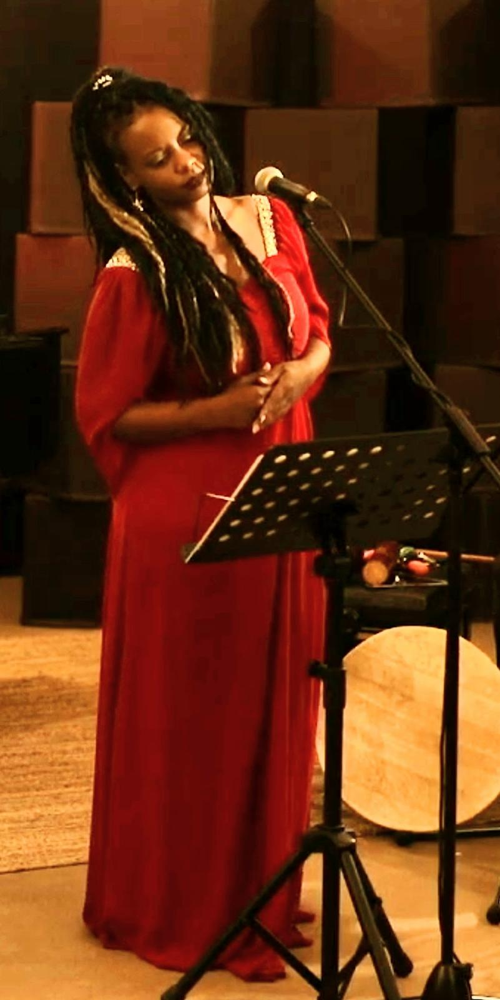

Rose Hill · Île Maurice · Océan Indien
« Une voix qui transporte vers des rêves imaginaires »Découvrir son univers ↓

Chanteuse professionnelle depuis les années 90, soliste et choriste — une voix enracinée à l'île Maurice, nourrie de rencontres musicales en France et dans l'océan Indien.
Native de l'île Maurice, Nadine Bellombre débute à 16 ans, portée par la soul, le reggae et le séga — le rythme ancré dans l'âme mauricienne. Des premières collaborations avec les figures de l'océan Indien aux scènes jazz internationales, sa voix a traversé continents et styles avec la même présence naturelle.
Lire sa biographie →avec la voix invitée de Nadine Bellombre
Une soirée de jazz avec quelques-uns des musiciens les plus marquants du Danemark.
Le guitariste Søren Lee et le saxophoniste Emil Hess conduisent un quartet puissant avec le bassiste
Jesper Bodilsen et le batteur Jacob Roved. Ensemble, ils créent un univers musical vivant et intime où tradition et renouveau se fondent.
La musique sera composée de compositions originales ainsi que de standards jazz classiques choisis,
interprétés avec personnalité, chaleur et un fort sens de l'improvisation — entre le ton nordique et la tradition jazz américaine.
La soirée est sublimée par la voix invitée de Nadine Bellombre, dont la voix chaude et expressive sera mise en valeur sur des titres sélectionnés.
« Un concert d'intensité, de présence et de classe internationale »